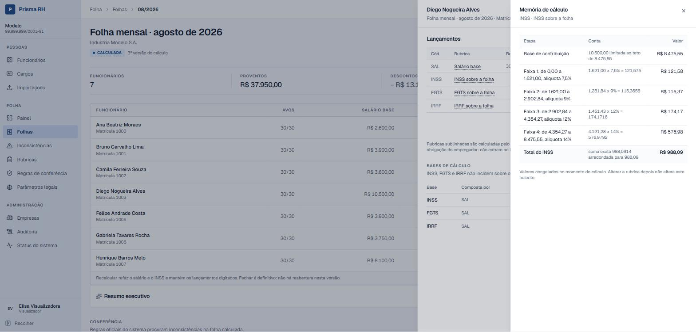
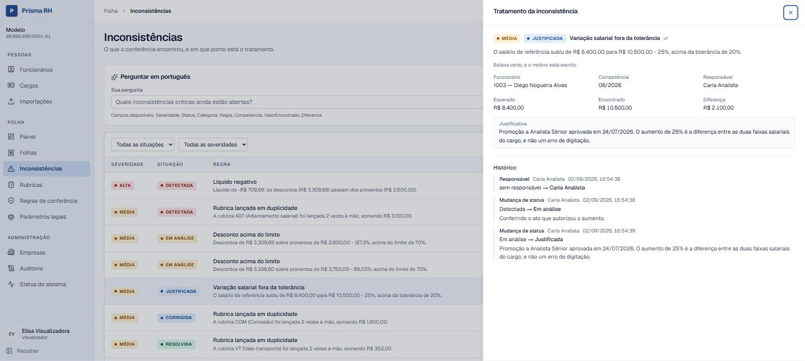

No ar · release v1.0.0
Prisma RH
Domínio complexo de folha de pagamento
- Arquitetura
- Monólito modular em quatro camadas; o domínio não referencia EF Core, ASP.NET nem AWS
- Testes
- 1.457 · 1.286 backend (com PostgreSQL real, executados também em modo globalization-invariant) e 171 frontend
- Segurança
- 50 testes em suíte própria e pentest em produção: 10 categorias, nenhuma vulnerabilidade
- Rotas
- 85, das quais 4 anônimas, cada uma com motivo escrito e travada por teste
Visão geral
Plataforma B2B de gestão, cálculo, conferência e auditoria de folha de pagamento brasileira, multiempresa. Departamentos pessoais e BPOs processam folha para muitas empresas, sob regras que mudam com o tempo, e precisam explicar cada valor, às vezes anos depois.
O Prisma RH produz o número e a conta que levou até ele: quais rubricas entraram, sobre qual base, com qual parâmetro vigente. Calcula folha mensal, férias, rescisão, adiantamento de 13º e 13º anual, com INSS progressivo, FGTS e IRRF, além de um motor de conferência com workflow de tratamento e trilha de auditoria.
Arquitetura
Monólito modular em ASP.NET Core (Minimal APIs) numa Lambda Function URL, com PostgreSQL no Neon e frontend React na Vercel. Importações pesadas seguem por SQS para um Lambda worker. Monólito e não microserviços: um produto com um banco e um time não tem o problema que microserviço resolve.
-
PrismaRH.DominioRegras de folha, sem EF Core, ASP.NET nem AWS. -
PrismaRH.AplicacaoCasos de uso. -
PrismaRH.InfraestruturaEF Core, integrações externas e camada de IA. -
PrismaRH.ApiRotas, políticas de autorização e limites (a política padrão nega). -
Lambda workerProcessa importações pela fila SQS, com idempotência, retentativa com teto e DLQ.
Da importação ao holerite auditado
- O DP importa funcionários por CSV ou XLSX; a API valida, mostra o preview e o relatório de erros e processa na hora ou por fila (SQS + Lambda).
- O motor determinístico calcula a folha: cada tipo apura suas bases separadamente (INSS, FGTS e IRRF não incidem sobre o mesmo número) com os parâmetros vigentes na data.
- Cada holerite guarda a memória de cálculo linha a linha e congela os valores: alterar uma rubrica depois não reescreve a folha anterior.
- O motor de conferência aplica regras versionadas, com tolerância por organização, e abre inconsistências.
- O analista trata cada inconsistência (Detectada, Em análise, Justificada, Corrigida, Resolvida), com responsável, comentários e evidências.
- Cada alteração deixa rastro numa trilha somente-inserção: quem, o quê, quando e de quanto para quanto.
Capturas de tela


Pontos fortes
- Folha brasileira completa: mensal, férias, rescisão, adiantamento e 13º anual, com INSS progressivo, FGTS, IRRF com dependentes e o redutor da Lei 15.270/2025.
- Memória de cálculo persistida: cada passo, com a conta escrita, o teto aplicado e o arredondamento declarado (AwayFromZero, não o banker's rounding do .NET).
- Vigência sem sobreposição: exclusion constraint no PostgreSQL protege o histórico contratual, mesmo com requisições simultâneas.
- Multiempresa por filtro global do EF Core: recurso de outra organização devolve 404, não 403; a trilha de auditoria é somente-inserção.
- Importação CSV/XLSX: preview, validação e relatório de erros, síncrona ou por fila.
- IA que explica, não calcula: o modelo propõe filtro em vocabulário fechado e a aplicação valida; não existe SQL vindo do modelo nem valor financeiro que tenha origem nele.
- Defesa de SSRF: allowlist fixa em código, DNS resolvido com todos os IPs conferidos e redirect revalidado a cada salto.
Limites e decisões conscientes
O que este projeto não faz, e por quê. Descrever isso com precisão vale mais do que exagerar o escopo.
- Não é homologado: nenhuma obrigação é transmitida a órgão público, e o produto não substitui um sistema comercial de folha.
- Afastamentos não existem no domínio, por isso a redução de férias por faltas (art. 130) não é aplicada.
- Três dos oito motivos de rescisão ficam bloqueados por falta de fonte oficial confiável; o sistema diz isso em vez de chutar.
- O motor carrega todos os contratos da empresa para processar uma folha: dezenas de milhares de vínculos exigiriam processar em lotes.
- O restore do banco foi testado uma vez, em 01/09/2026, e não é automatizado.
- A IA é uma camada de leitura: nenhum caminho iniciado por resposta de modelo escreve no banco.